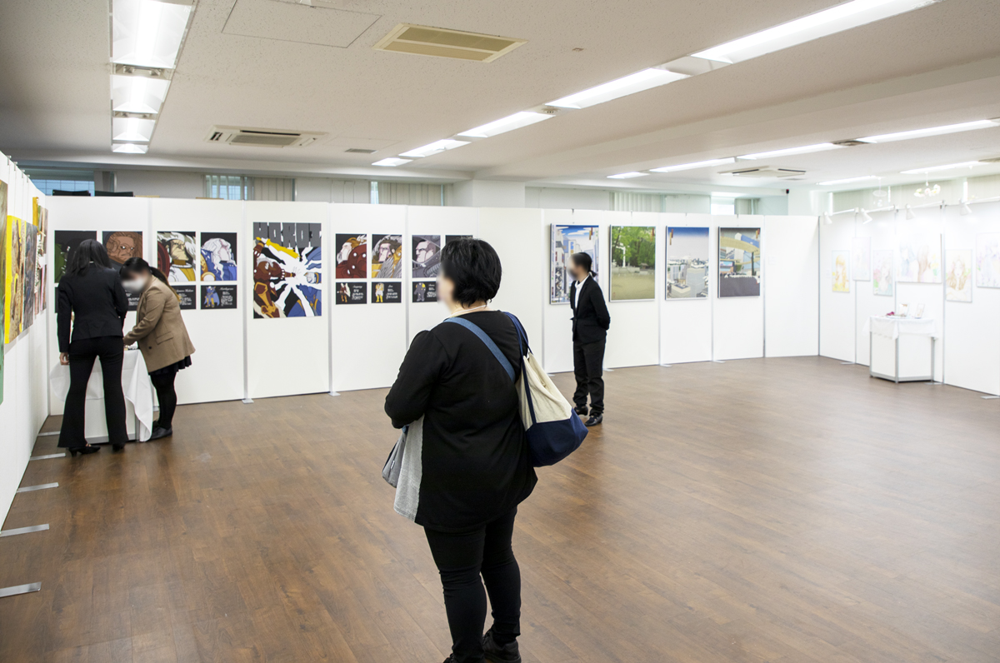
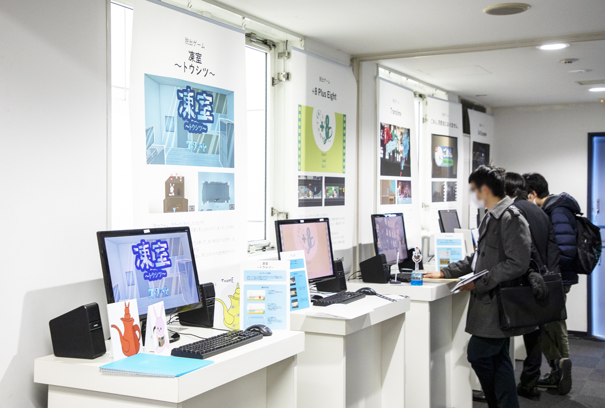
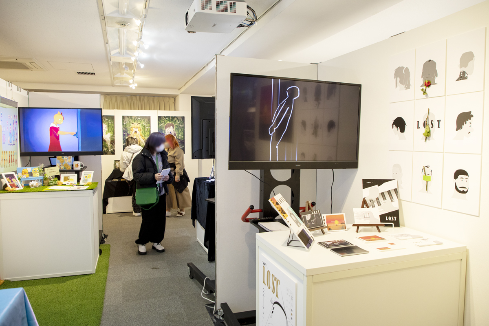
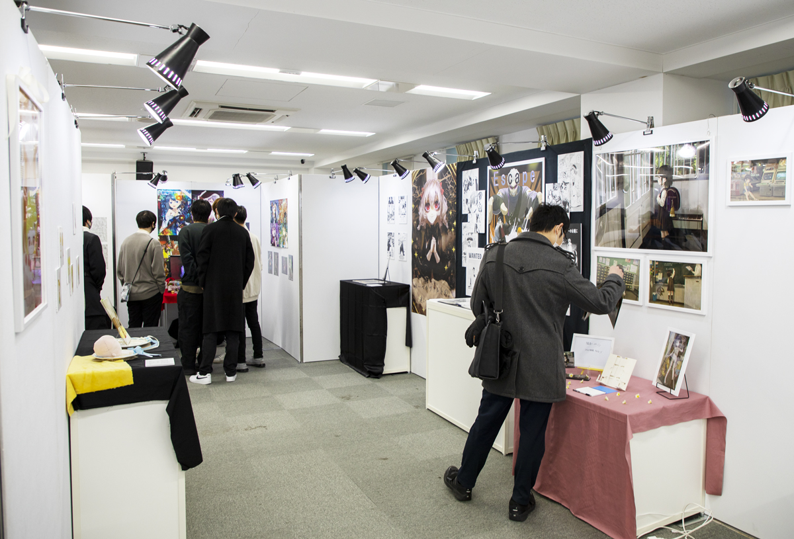
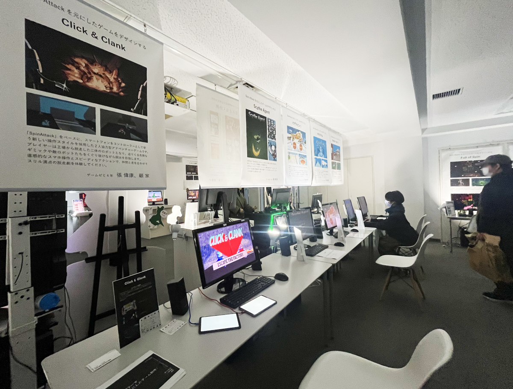
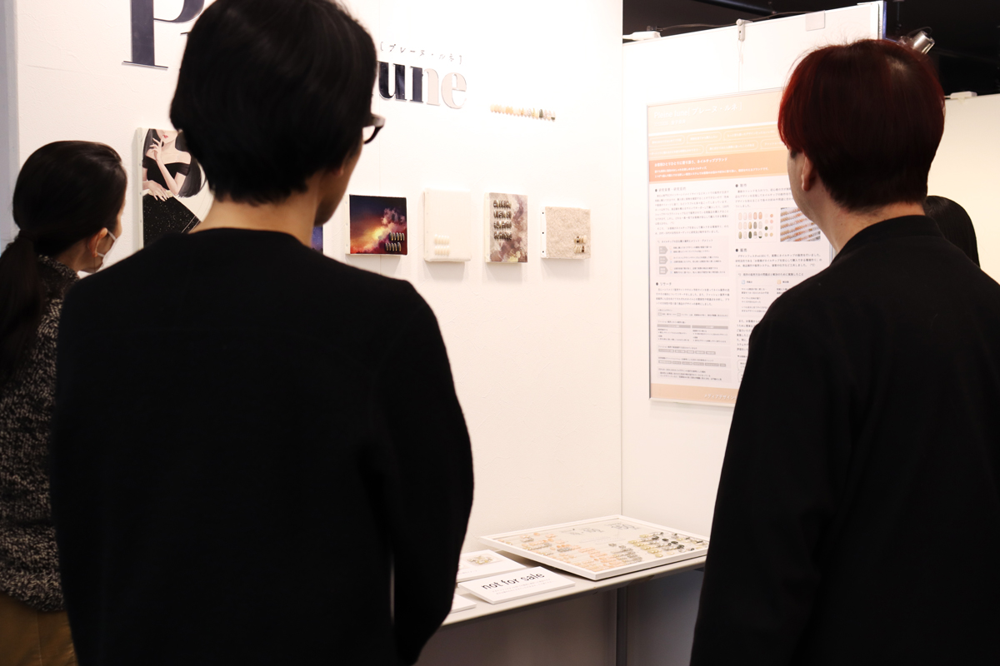
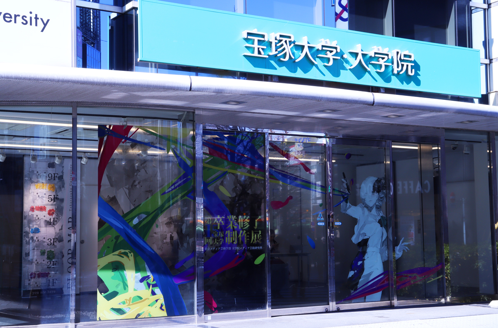
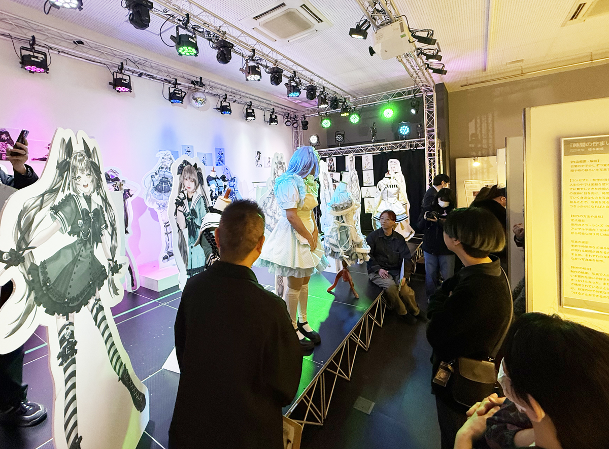
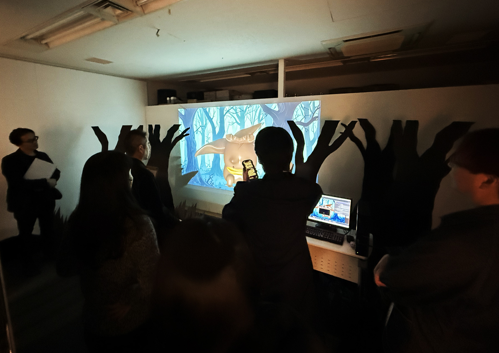

2027年2月6日(土)〜2月7日(日)
最新情報はこちら 卒展公式








開催概要・アクセス Information
〒160-0023 東京都新宿区西新宿7丁目11番1号
●JR・都営地下鉄・小田急線・京王線「新宿」駅西口から徒歩5分
●西武新宿線「西武新宿」駅から徒歩4分
名称：第17回宝塚大学 卒業修了制作展
日時：2027/2/6(sat)-7(sun) 10:00~17:00
会場：宝塚大学 東京新宿キャンパス
入場料無料
ご来場にあたって皆様へのお願い
- 会場内での飲食はご遠慮ください
- 混雑時は入場制限を設ける場合がございます
- 当日のご来場は、電車・バスなどの公共交通機関をご利用ください（大学敷地内に駐輪・駐車スペースはありません）
お問い合わせ Contact
本展に関するご質問は、お問い合わせフォームよりお寄せください。
お問い合わせ内容によっては、回答までにお時間をいただく場合がございます。